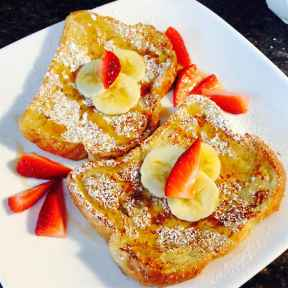

French Toast Recipe

There are many French Toast recipes out there, but this one is the tasteiest!
French Toast is a very tasty breakfast food, and with the right mixing, and cooking, they can be perfect!
Ingredients:
- 1/4 cup all-purpose flour
- 1 Cup of Milk
- 3 Eggs
- 1 Tablespoon of White Sugar
- 1 Tablespoon of Vanilla Extract
- 1/2 Teaspoon of Ground Cinnamon
- 1 Pinch Salt
- 12 Thick Slices of Bread
Directions:
- Measure out flour into a large mixing bowl. Slowly mix in milk, eggs, sugar, vanilla extract, cinnamon, and salt until smooth.
- Heat a slightly oiled griddle or a frying pan to medium heat
- Saok bread slices in milk mixture until saturated
- Working in batches, cook bread on the preheated griddle or pan until golden brown on each side, serve hot.